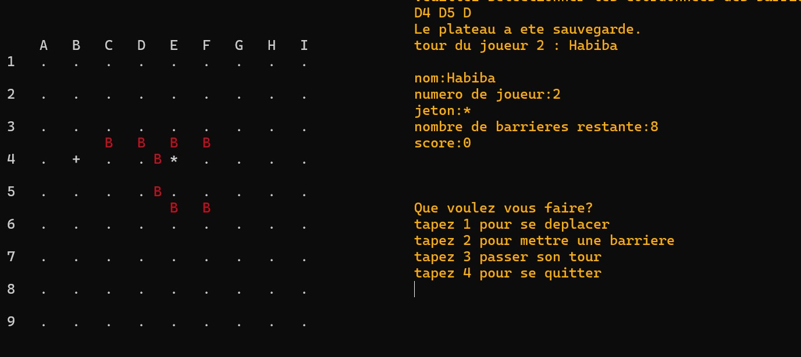

← Retour au portfolio
Quoridor – Jeu de stratégie en C
ECE – 1A cycle ingénieur · Projet C

Objectif du projet
Implémenter en langage C le jeu de société Quoridor, un jeu de stratégie
pour 2 ou 4 joueurs sur un plateau de 9 × 9 cases. Chaque joueur doit atteindre
le bord opposé en déplaçant son pion tout en posant des barrières pour ralentir l’adversaire.
Contexte
Projet réalisé en 1ère année de cycle ingénieur. Objectif : concevoir un
jeu complet en mode console avec gestion du plateau, sauvegarde, scores
et interface utilisateur textuelle.
Règles & mécaniques de jeu
- Plateau 9 × 9, déplacements orthogonaux.
- À chaque tour : déplacer son pion ou poser une barrière.
- Les barrières ne doivent jamais bloquer totalement un joueur.
- Le premier à atteindre le bord opposé gagne.
Structures de données & architecture
Plateau & barrières
- Tableau 2D pour la grille 9 × 9.
- Mise à jour dynamique des cases.
- Validation des barrières pour éviter les blocages.
Joueurs & état de partie
- Structures pour nom, position, barrières restantes.
- Gestion du tour courant et de la victoire.
- Variables globales pour l’état du plateau.
Fonctionnalités principales
- Plateau : génération et initialisation.
- Déplacements : gestion des collisions et limites.
- Barrières : validation et placement.
- Tours de jeu : boucle principale interactive.
- Victoire : détection automatique.
- Menu : nouvelle partie, reprise, aide, scores.
- Sauvegarde : fichiers texte.
- Scores : stockage et affichage.